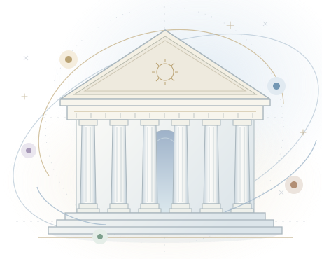

WELCOME TO PANTHEONA clear path from task to outcome.
Choose a project, connect a provider, and give your council a goal.

Distinct roles. A shared purpose.
YOUR PROJECTNo folder selectedA home for your work.
Choose a folder for your tasks, files, and ideas.
- Choose a local project or connect your server.
- Save a provider connection. One provider is enough to start.
- Optionally test API access. Provider tests can incur usage.
- Run a task, review the result, and save your work.
HermesPlan & coordinate
HephaestusBuild & refine
AthenaResearch & reason
ApolloCreate & imagine
ChronosSchedule & deliver
A little inspiration. A new beginning.
Bring together the right minds to think, build, fix and explore — with you, from idea to outcome.
Ready
New task
Describe a goal to get started.
Review changes
Prepare changes from an artifact or file.
No pending changes
TASK CENTER
Your work, in one place.
ARTIFACT LIBRARYKeep the work you create.
Real outputs, with their source task and saved location.
Project files
Current project
Secret files are excluded. Changes are written only after a fresh diff is accepted.
Let Chronos take the next shift.
Local schedules need a running service and an awake computer.
Give every role the right tools.
Shared skills, tools, memory, messaging, and engineering isolation.
A LITTLE INSPIRATIONChoose a starting point
Distinct minds. A shared purpose.